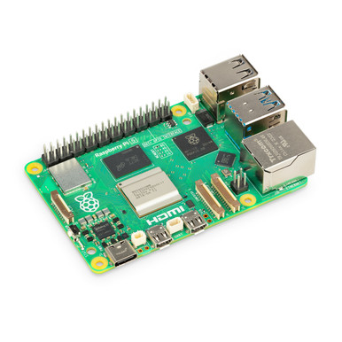
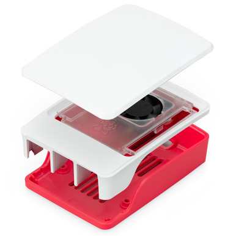
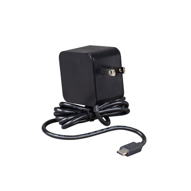
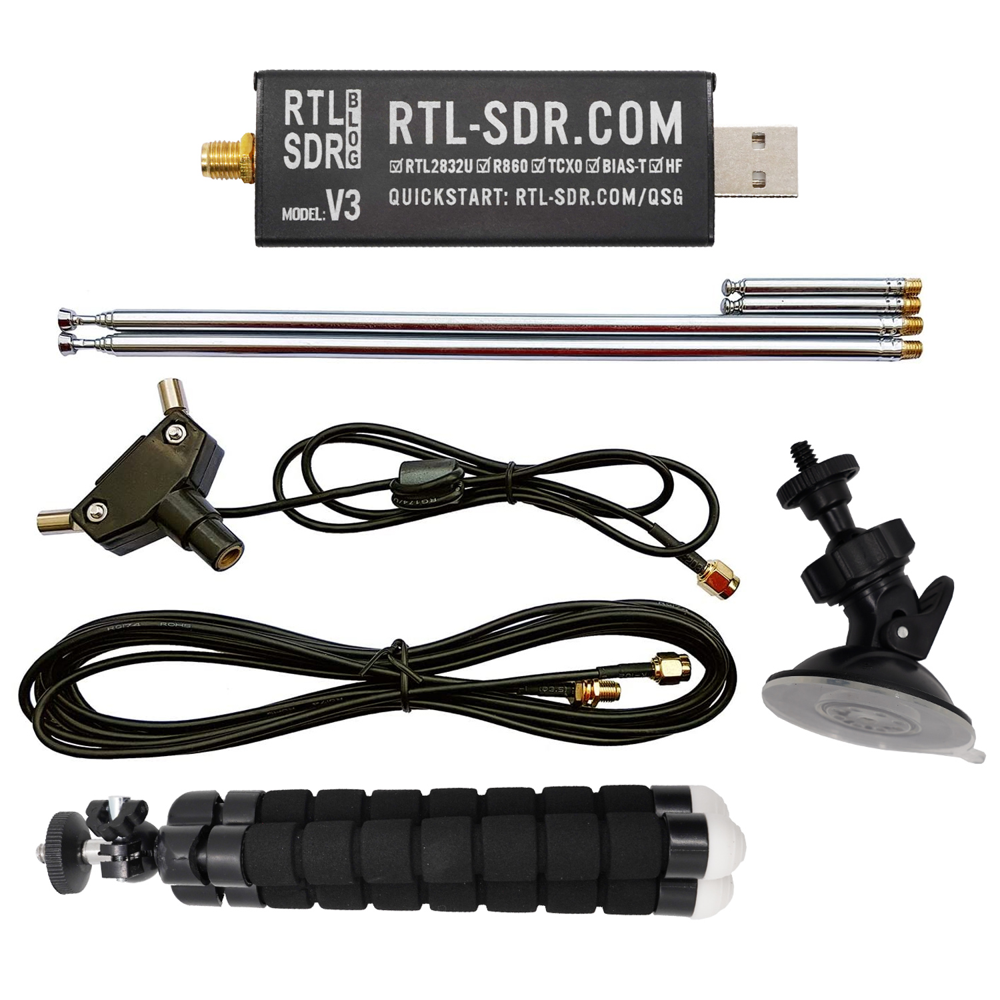
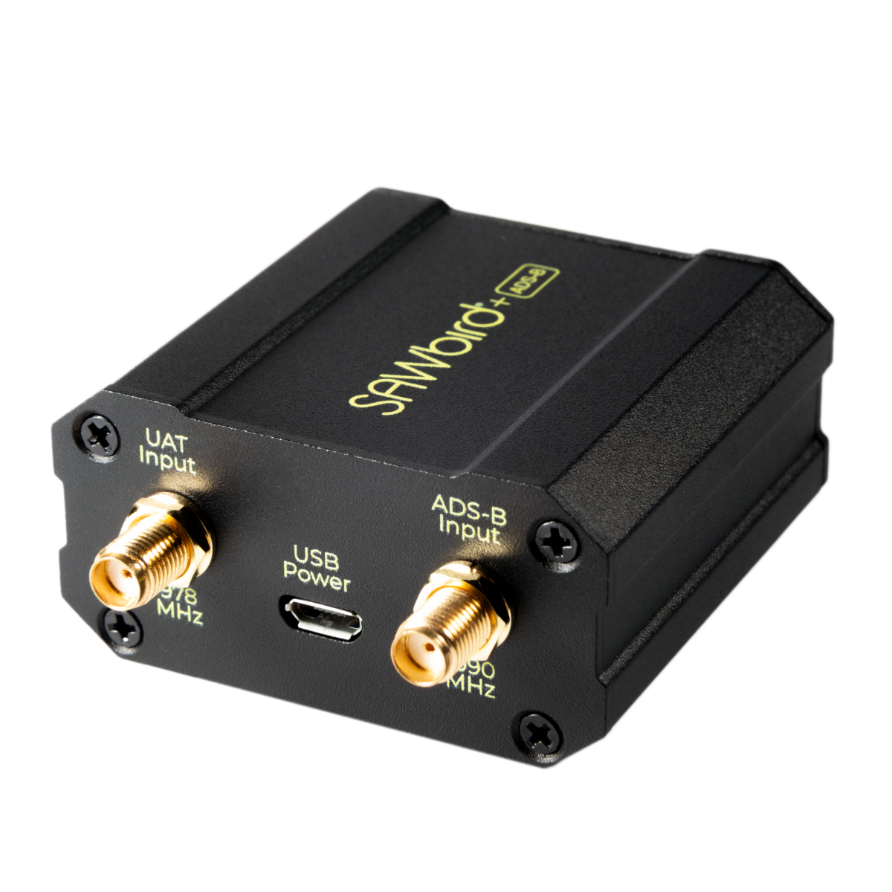

Home / Detection Electronics / Raspberry Pi Receivers / Professional
Detection Electronics · Professional kit
Pi Receiver Dual-Band
$549 / $629 Hardware Only / Ready-to-Run
Hardware Only
$549
Ships as the factory kit. You load the receiver image.
Ready-to-Run
$629
Same hardware. We load the receiver image before it ships.
Extra business day. Ships from us after we load it.
- Raspberry Pi 5 (4 GB) professional kit — Remote ID plus 1090 and 978
- Dual-channel 1090 / 978 filter on the radio. That filter is why this kit costs more
- Official 27 W USB-C PD and official Pi 5 case with fan (no battery)
- 1090 SMA whip and 978 SMA whip. Indoor case — not weatherproof
- No V4. No Fusion Sensor. Receive only
Hardware Only ships from US shops after payment. Ready-to-Run ships from us after we load the image. Sold by Dark Sky Systems LLC. Card via Stripe.